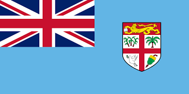
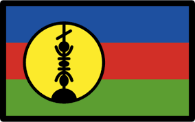

day 3: Exploring Melanesia
malanesian people.
Introduction to Melanesia
Melanesia is a beautiful part of Oceania made up of many islands. It is known for its stunning beaches, lush forests, and rich culture. The people here live close to nature, and their traditions have been passed down for generations.
Big Cities
Melanesia is home to several big cities like Port Moresby in Papua New Guinea, Honiara in the Solomon Islands, and Suva in Fiji. These cities are full of life, with colorful markets, traditional dances, and warm, welcoming people.
Countries and Their Unique Features
Fiji

Fiji is famous for its crystal-clear waters and beautiful coral reefs.

Suva, the capital city of Fiji, is a bustling hub of culture and commerce.
Papua New Guinea

The highlands of Papua New Guinea are home to many indigenous tribes with unique cultures.

Port Moresby, the capital, is a city with a rich history and vibrant cultural scene.
Solomon Islands

The Solomon Islands are known for their unspoiled natural beauty and friendly communities.

Honiara, the capital, is a gateway to the rich cultural heritage of the islands.
Vanuatu

Vanuatu is famous for its active volcanoes and adventurous spirit.

Port Vila, the capital, is a charming city with a mix of traditional and modern influences.
New Caledonia

New Caledonia is known for its beautiful lagoon, one of the largest in the world.

Nouméa, the capital, is a vibrant city with French influences and tropical charm.
West Papua

West Papua is known for its dense rainforests and diverse wildlife.

Manokwari, the capital, is a city rich in culture and natural beauty.
Countries, Their Flags, and Capital Cities in Melanesia
| Country | Flag | Capital City |
|---|---|---|
| Fiji |  | Suva |
| Papua New Guinea |  |
Port Moresby |
| Solomon Islands |  |
Honiara |
| Vanuatu |  |
Port Vila |
| New Caledonia |  | Nouméa |
| West Papua |  |
Manokwari |
Did You Know?
Did you know that Melanesia is home to some of the most diverse languages in the world? Papua New Guinea alone has over 800 languages!
The coral reefs in Melanesia are among the most beautiful and diverse on the planet, attracting divers from all over the world.
Vanuatu is known for its traditional land diving ceremonies, where people jump from tall wooden towers with only vines tied to their ankles!
New Caledonia's lagoon is a UNESCO World Heritage site, celebrated for its exceptional marine life.
West Papua is part of the "Coral Triangle," an area known for having the highest marine biodiversity in the world.